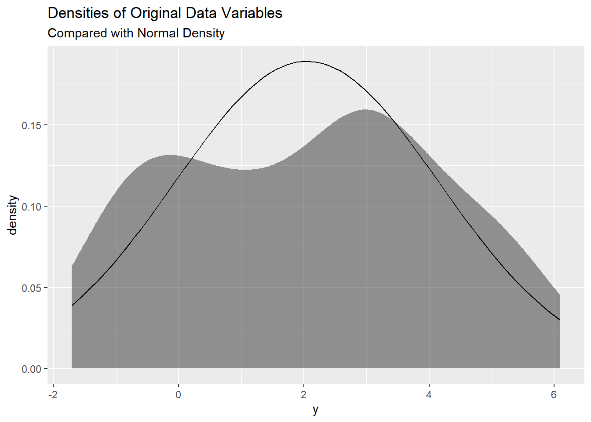

set.seed() : random number generation, good for reproducability - the number is a label for the set of numbers generated.
rnorm() : generates random numbers from a normal (Guassian) distribution.
tibble() : constructs a data frame.
gf_fitdistr() : provides an easy way to overlay a probability distribution curve onto a plot: assessing how well the theoritical distribution matches the empirical data.
Setup Chunk:
library(tidyverse)
── Attaching core tidyverse packages ──────────────────────── tidyverse 2.0.0 ──
✔ dplyr 1.1.4 ✔ readr 2.1.5
✔ forcats 1.0.0 ✔ stringr 1.5.1
✔ ggplot2 3.5.1 ✔ tibble 3.2.1
✔ lubridate 1.9.3 ✔ tidyr 1.3.1
✔ purrr 1.0.2
── Conflicts ────────────────────────────────────────── tidyverse_conflicts() ──
✖ dplyr::filter() masks stats::filter()
✖ dplyr::lag() masks stats::lag()
ℹ Use the conflicted package (<http://conflicted.r-lib.org/>) to force all conflicts to become errors
library(mosaic)
Registered S3 method overwritten by 'mosaic':
method from
fortify.SpatialPolygonsDataFrame ggplot2
The 'mosaic' package masks several functions from core packages in order to add
additional features. The original behavior of these functions should not be affected by this.
Attaching package: 'mosaic'
The following object is masked from 'package:Matrix':
mean
The following objects are masked from 'package:dplyr':
count, do, tally
The following object is masked from 'package:purrr':
cross
The following object is masked from 'package:ggplot2':
stat
The following objects are masked from 'package:stats':
binom.test, cor, cor.test, cov, fivenum, IQR, median, prop.test,
quantile, sd, t.test, var
The following objects are masked from 'package:base':
max, mean, min, prod, range, sample, sum
library(ggformula)library(infer)
Attaching package: 'infer'
The following objects are masked from 'package:mosaic':
prop_test, t_test
library(broom) # Clean test results in tibble formlibrary(resampledata) # Datasets from Chihara and Hesterberg's book
Attaching package: 'resampledata'
The following object is masked from 'package:datasets':
Titanic
library(openintro) # More datasets
Loading required package: airports
Loading required package: cherryblossom
Loading required package: usdata
Attaching package: 'openintro'
The following object is masked from 'package:mosaic':
dotPlot
The following objects are masked from 'package:lattice':
ethanol, lsegments
Inference for a Single Mean
.
Case Study 1 - Toy Data
set.seed(40) # for replication# Data as individual vectors ( for t.tests etc)y <-rnorm(50, mean =2, sd =2)# And as tibble toomydata <-tibble(y = y)mydata
##mydata %>%gf_density(~y) %>%gf_fitdistr(dist ="dnorm") %>%gf_labs(title ="Densities of Original Data Variables", subtitle ="Compared with Normal Density")

.
Observations:
The variable y appear to be centered around 2
It does not seem to be normally distributed…
.
Research Question
Could the mean of the population μ, from which y has been drawn, be zero?